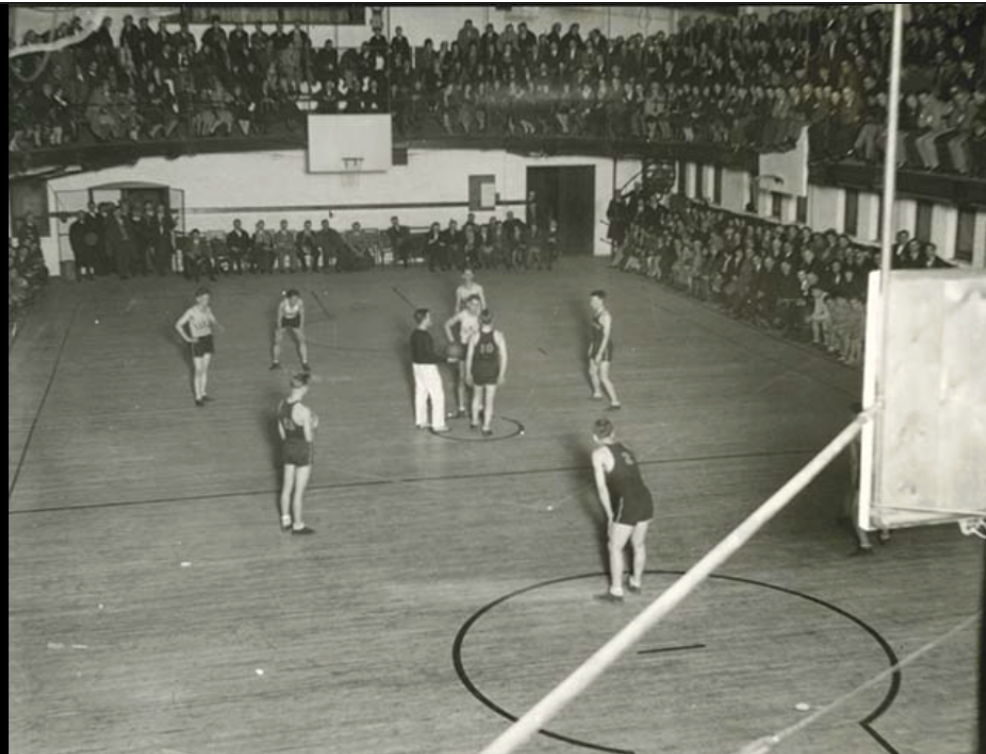
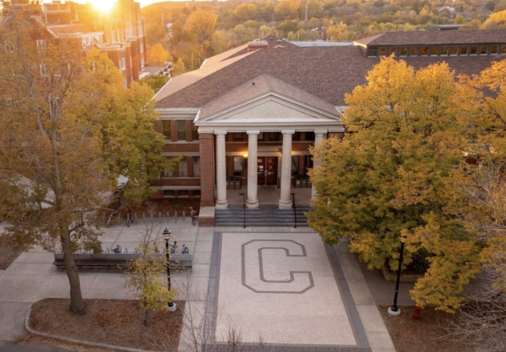

Sayles-Hill was built in 1910 with direction from architect Jerome Paul Jackson. Sayles-Hill shares many similarities with the styling of Laird. Originally a gymnasium, the columns and porticoes invoke classical style in a movement in line with the American Renaissance.

The American Renaissance style was a time of great pride and national confidence that projected wealth and imperial power. Sayles-Hill is a part of the “Early Buildings” era.

← Back to Map